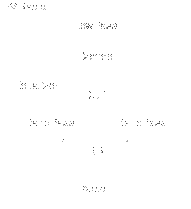
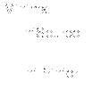
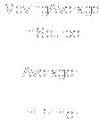
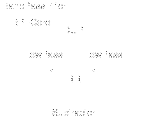
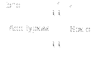

StreamIt Cookbook
streamit@cag.lcs.mit.edu
September, 2006
1 StreamIt Overview
Most data-flow or signal-processing algorithms can be broken down into
a number of simple blocks with connections between them. In StreamIt
parlance, the smallest block is a filter; it has a single input
and a single output, and its body consists of Java-like code. Filters
are then connected by placing them into one of three composite blocks:
pipelines, split-joins, and feedback loops. Each of these structures
also has a single input and a single output, so these blocks can be
recursively composed.
A typical streaming application might be a software FM radio, as shown
in Figure 1. The program receives its input from an
antenna, and its output is connected to a speaker. The main program
is a pipeline with a band-pass filter for the desired frequency, a
demodulator, and an equalizer; the equalizer in turn is made up of a
split-join, where each child adjusts the gain over a particular
frequency range, followed by a filter that adds together the outputs
of each of the bands.

Figure 1: Stream graph for a software FM radio
Our goal with choosing these constructs was to create a language with
most of the expressiveness of a general data-flow graph structure, but
to keep the block-level abstraction that modern programming languages
offer. Allowing arbitrary graphs makes scheduling and partitioning
difficult for the compiler. The hierarchical graph structure allows
the implementation of blocks to be ``hidden'' from users of the block;
for example, an FFT could be implemented as a single filter or as
multiple filters, but so long as there is a stream structure named
``FFT'' somewhere in the program the actual implementation is
irrelevant to other modules that use it. Since most graphs can be
readily transformed into StreamIt structures, StreamIt is suitable for
working on a wide range of signal-processing applications.
2 Programming in StreamIt
2.1 A Minimal Program

void->void pipeline Minimal {
add IntSource;
add IntPrinter;
}
void->int filter IntSource {
int x;
init { x = 0; }
work push 1 { push(x++); }
}
int->void filter IntPrinter {
work pop 1 { print(pop()); }
}
This is the minimal interesting StreamIt program. Minimal
is a StreamIt pipeline: the output of its first child is
connected to the input of its second child, and so on. It has two
children, a source and a sink. Each of these are implemented as
StreamIt filter objects.
A filter has two special functions, an init function and a
work function. Both of these are present in
IntSource. The init function runs once at the start of
the program; the work function runs repeatedly forever. If the init
function is omitted, as it is in IntPrinter, it is assumed
to be empty. Work functions declare their data rates, which
may be static or dynamic. The source here declares that each
iteration of the work function pushes a single item on to its output;
the sink declares that it pops a single item from its input.
Every StreamIt structure has a single input and a single output. The
filter and pipeline declarations here show the types of these inputs
and outputs. C-like int and float types are
available, along with bit for one-bit data and
complex for complex floating-point data. void
is used as a special type to indicate the boundary of the program:
``the program'' in StreamIt is defined as a stream structure with both
void input and output types. A filter that takes no input
at all should also be declared to take void as its input
type, and similarly a void output can be used if a filter
produces no output.
How to Compile and Run
The StreamIt compiler script strc can be used to compile and
execute StreamIt programs. If you are using the StreamIt release, you
can find all of the cookbook examples in the following directory:
cd $STREAMIT_HOME/apps/examples/cookbook
The minimal example is stored in Minimal.str, and the following
command will compile it for the uniprocessor backend:
strc Minimal.str -o minimal
The resulting binary is stored in minimal, and it can be
executed for 5 iterations as follows:
minimal -i 5
Doing so will print the integers from 0 to 4, in increasing order.
During the course of compilation, a number of stream graphs are ouput
to dot files in the current directory. The dot format can
be displayed and converted to other formats using the Graphviz
software, which is available online1. Running the following command will draw
the stream graph for the program, as pictured to the right of the
source code above:
dotty stream-graph-simple.dot
There are many other dot files that are output by the compiler;
see Section 3 of this document for more details.
The Java Library. In addition to using the StreamIt compiler,
it is possible to convert StreamIt programs into equivalent Java
programs that can be executed using any Java VM. This is particularly
convenient for testing and debugging, as well as for cases when the
compiler might encounter a bug.
To run the Minimal program for 5 iterations in the Java library,
do as follows:
strc --library Minimal.str -i 5
This command will output a Minimal.java file, compile it with a
Java compiler, and run it using java. The output should always
be identical to that obtained using the compiler. In addition, the
library will output a Minimal.dot file that can be visualized
using Graphviz.
For more details on the StreamIt compiler and execution environment,
please consult Section 3.
2.2 A Moving Average Filter

void->void pipeline MovingAverage {
add IntSource();
add Averager(10);
add IntPrinter();
}
int->int filter Averager(int n) {
work pop 1 push 1 peek n {
int sum = 0;
for (int i = 0; i < n; i++)
sum += peek(i);
push(sum/n);
pop();
}
}
Most of a typical StreamIt program consists of filters that produce
some output from their input. The Averager filter shown
here is such a filter. Like the filters shown before,
Averager has a work function with statically declared
input and output rates.
In addition to peeking and popping, Averager peeks
at its input stream. The peek() operator returns a
particular item off of the input stream, with peek(0)
returning the next item that would normally be popped. The work
function must declare a peek rate if it peeks at all, but this peek
rate is a maximum, rather than an exact, rate; it would be valid for
the Averager filter to peek(n-2) and never
peek(n-1), but peek(n) is illegal. Note that
mixing peeking and popping is valid, but that popping an item shifts
the index of future peeks.
Averager also has a stream parameter. The number
n is the number of items to average. This is passed like
a normal function parameter from the add statement that
creates the filter. Within the filter, the parameter is a constant:
it is illegal for code to modify the parameter. This allows parameter
values to be used in expressions for e.g. I/O rates, as in the
peek rate here.
This program also provides a basic demonstration of StreamIt's filter
scheduler. There is a guarantee that the Averager filter
is not run until its input rates can be met, and in particular, that
there are 10 inputs available so peeking can happen. For this to
happen, the source needs to run nine additional times at the start of
the program; there can then be steady-state exections of source,
averager, printer. The StreamIt compiler handles this automatically.
While all of the examples so far have had filters with matched I/O
rates, the compiler also automatically schedules the execution of
adjacent filters whose push and pop rates are different.
2.3 A Low-Pass Filter
float->float filter LowPassFilter(float rate, float cutoff,
int taps, int decimation) {
float[taps] coeff;
init {
int i;
float m = taps - 1;
float w = 2 * pi * cutoff / rate;
for (i = 0; i < taps; i++) {
if (i - m/2 == 0)
coeff[i] = w/pi;
else
coeff[i] = sin(w*(i-m/2)) / pi / (i-m/2) *
(0.54 - 0.46 * cos(2*pi*i/m));
}
}
work pop 1+decimation push 1 peek taps {
float sum = 0;
for (int i = 0; i < taps; i++)
sum += peek(i) * coeff[i];
push(sum);
for (int i=0; i<decimation; i++)
pop();
pop();
}
}
The work function for a low-pass filter looks much like the work
function of the moving-average filter; however, it has extensive
initialization code. From the sampling rate, cutoff frequency, and
number of taps, coefficients for an FIR filter can be statically
calculated. This is done once, in the init function, and saved in the
coeff array; the work function then effectively does a
convolution. StreamIt provides a number of built-in mathematical
functions, such as the call to sin() here, along with
the constant pi.
StreamIt's array syntax is more C-like than Java-like. Every array
has a fixed length; this length can be a numeric constant or stream
parameter, or other value that can be statically evaluated. In the
declaration syntax, the length of the array comes between the base
type and the variable name.
The coefficient array here is defined as a field in the
filter. If the name coeff were used as a local variable
in the init or work function, it would shadow the field, as in other
languages. Otherwise, uses in both the init and work functions
reference the field. If multiple low-pass filters existed, each would
have its own coefficient array.
2.4 A Band-Pass Filter

float->float pipeline BandPassFilter
(float rate, float low, float high, int taps) {
add BPFCore(rate, low, high, taps);
add Subtracter();
}
float->float splitjoin BPFCore
(float rate, float low,
float high, int taps) {
split duplicate;
add LowPass(rate, low, taps, 0);
add LowPass(rate, high, taps, 0);
join roundrobin;
}
float->float filter Subtracter {
work pop 2 push 1 {
push(peek(1) - peek(0));
pop(); pop();
}
}
We implement a band-pass filter using two low-pass filters in a
StreamIt structure called a split-join. This structure
contains a splitter, some number of children that run in
parallel, and a joiner. It overall has a single input and a
single output, and its children each have a single input and a single
output.
This split-join has a duplicating splitter; thus, each incoming item
is sent to both of the children. The joiner is a round-robin joiner,
such that outputs are taken from the first child, then the second, in
alternating order. There may be any number of children, in which case
a round-robin joiner takes inputs from each of them in series. The
order of the children is the order in which they are added.
roundrobin can be used as a splitter, as well as a joiner;
the meaning is symmetric. Other syntaxes are valid:
roundrobin(2) reads two inputs from each child in turn,
and roundrobin(1,2,1) requires exactly three children and
reads one input from the first, two from the second, and one from the
third.
A typical use of a split-join is to duplicate the input, perform some
computation, and then combine the results. In this case, the desired
output is the difference between the two filters; the
Subtracter filter is placed in a pipeline after the
split-join, and finds the desired difference. In general, a child can
be any StreamIt construct, not just a filter.
The implementation of pop() in the compiler and runtime
system does not allow multiple pops to occur in the same statement.
This is reflected in the implementation of Subtracter
here.
2.5 An Equalizer
float->float pipeline Equalizer(float rate, int bands, float[bands] cutoffs,
float[bands] gains, int taps) {
add EqSplit(rate, bands, cutoffs, gains, taps);
add float->float filter {
work pop bands-1 push 1 {
float sum = 0;
for (int i = 0; i < bands-1; i++)
sum += pop();
push(sum);
}
};
}
float->float splitjoin EqSplit(float rate, int bands, float[bands] cutoffs,
float[bands] gains, int taps) {
split duplicate;
for (int i = 1; i < bands; i++)
add pipeline {
add BandPassFilter(rate, cutoffs[i-1], cutoffs[i], taps);
add float->float filter {
work pop 1 push 1 { push(pop() * gains[i]); }
};
};
join roundrobin;
}

Figure 2: Stream graph for an equalizer
This equalizer works by having a series of band-pass filters running
in parallel, with their outputs added together. The caller provides
arrays of cutoff frequency and respective gains.
In the implmentation here, the output of EqSplit is a
series of bands-1 outputs from the respective low-pass
filters. An inline filter is used to sum the results
together. This is akin to an anonymous class in Java; the filter
declaration does not have an explicit name, but otherwise has syntax
almost identical to a top-level filter. In general, inline filters
should only be used for very simple filters, such as this or the
inlined amplifier in EqSplit.
EqSplit is a normal split-join, as shown previously. Its
body consists of a set of near-identical inlined pipelines; for
pipelines and split-joins, the input and output type declarations may
be omitted on anonymous streams. Since the children are so similar,
they are added within a normal for loop. The compiler is
able to examine the loop provided that the loop bounds are expressions
of constants and stream parameters.
2.6 An Echo

float->float feedbackloop Echo
(int n, float f) {
join roundrobin(1,1);
body FloatAdderBypass();
loop float->float filter {
work pop 1 push 1 {
push(pop() * f);
}
};
split roundrobin;
for (int i = 0; i < n; i++)
enqueue(0);
}
float->float filter FloatAdderBypass {
work pop 2 push 2 {
push(peek(0) + peek(1));
push(peek(0));
pop();
pop();
}
}
This example uses a StreamIt feedback loop to implement an echo
effect. In a sense, a feedback loop is like an inverted split-join:
it has a joiner at the top and a splitter at the bottom. A feedback
loop has exactly two children, which are added using the body
and loop statements. Thus, this implementation takes an
input from the loop input and an input from the feedback path, adds
them, and outputs the result. The result is also scaled by the value
f and sent back to the top of the loop.
Feedback loops have a specialized push-like statement,
enqueue. Each enqueue statement pushes a single value on
to the input to the joiner from the feedback path. There must be
enough values enqueued to prevent deadlock of the loop components;
values enqueued delay data from the feedback path.
2.7 Fibonacci
void->int feedbackloop Fib {
join roundrobin(0,1);
body int->int filter {
work pop 1 push 1 peek 2 { push(peek(0) + peek(1)); pop(); }
};
loop Identity<int>;
split duplicate;
enqueue(0);
enqueue(1);
}
Using a feedback loop for a Fibonacci number generator is slightly
unusual but possible. The joiner reads no items from the stream input
(also declared of type void), but reads items continuously
from the feedback path. Within a feedback loop, round-robin splitters
and joiners address the external path first and the feedback path
second. This loop also uses the special Identity filter
on the loop path; this is equivalent to an empty filter that copies
its input to its output, but occurs frequently enough that a shorthand
is useful to both the programmer and the compiler.
3 Using the StreamIt Compiler
This section walks through a sample session with the compiler and
runtime system. We will use the FMRadio example from the
StreamIt release as a running example. To get started, change to the
following directory:
% cd $STREAMIT_HOME/apps/examples/cookbook
The example is in FMRadio.str. The following
sections describe the compilation of FMRadio using the
uniprocessor backend, the cluster/multicore backend, and the Java
library. A summary of the compiler's command-line options can be
found in Appendix B, or by typing strc -help at
the command line.
3.1 Compiling for a Uniprocessor
There are two ways to compile a StreamIt program for execution on a
general-purpose processor. The first method (the default) compiles to
a set of C++ files, which are linked against a StreamIt runtime
library. It uses the same infrastructure as our cluster backend and
supports the full suite of StreamIt features and optimizations. The
second method (invoked with the -simpleC option) emits a
standalone C file in which the entire program is inlined into a single
function. The simpleC backend is not fully featured2 but the output is readable and the C interface may be
useful for some compiler projects. As we recommend using the default
backend, we focus on it for the remainder of this section.
To compile FMRadio using the uniprocessor backend, issue the
following command (the compiler output is shown):
% strc FMRadio.str -o fm
Starting Kopi2SIR... done.
Entry to Cluster Backend (uniprocessor)
Running Constant Prop and Unroll... done.
Running Constant Field Propagation... done.
Estimating Code size of Filters... done.
Estimating Code size of Filters... done.
Running Partitioning... target number of threads: 1
Done Partitioning...
Generating cluster code...
Done generating cluster code.
gcc34 -O3 -I/u/thies/research/streams/streams/library/cluster
-c -o combined_threads.o combined_threads.cpp
gcc34 -O3 -o fm combined_threads.o
-L/u/thies/research/streams/streams/library/cluster
-lpthread -lcluster -lstdc++
This will create a number of threadXX.cpp files, one for each filter,
splitter, and joiner in the original program. The files are
concatenated into a single file (combined_threads.cpp) and compiled to
create a binary named fm. The binary can be executed for 5
steady-state iterations as follows:
% ./fm -i 5
278073.968750
278074.750000
278075.406250
278075.968750
278076.437500
During the compilation process, several dot graphs are
generated. The dot format can be displayed and converted to
other formats using the Graphviz software, which is available
online3.
For example, we can examine a stream graph for the FM application as
follows:
% dotty stream-graph-simple.dot
The result appears in Figure 3. A complete list
of the dot graphs that are produced on the normal uniprocessor
path are shown in Figure 4.
figure=fm-sir-tree.eps,width=6.6in
Figure 3:
stream-graph-simple.dot for the FMRadio example.
| Filename |
Description |
| stream-graph-simple.dot |
0pt[24pt][20pt]2.75inOriginal stream graph, as written by programmer. |
| stream-graph.dot |
0pt[24pt][20pt]2.75inOriginal stream graph, including I/O rates. |
| after-collapse-sjs.dot |
0pt[24pt][20pt]2.75inPartial canonicalization of stream graph, after collapsing data parallelism in the application. (The parallelism can be restored if needed.) |
| canonical-graph.dot |
0pt[24pt][20pt]2.75inCanonical version of stream graph, after further eliminating unneeded synchronization. |
Figure 4: Notable
dot graphs produced on the uniprocessor path.
Domain-specific optimizations. It turns out that our
version of the FMRadio has a lot of redundant computation the way in
which it is written. For example, each BandPassFilter could be
implemented as a single FIR filter rather than a composition of LowPassFilter's; in fact, the entire equalizer could be collapsed to
a single FIR filter. Further, some of these operations are more
efficient if executed in the frequency domain, with an FFT/IFFT being
used to translate to and from the time domain.
The StreamIt compiler includes a set of domain-specific optimizations
that will automatically perform the transformations described above.
The analysis considers all filters that are ``linear''---that is, each
of their outputs is an affine combination of their inputs. The
compiler automatically detects linear filters by analyzing the code in
their work functions. Then, it performs algebraic simplification of
adjacent linear filters, as well as automatic translation to the
frequency domain. Since these transformations can sometimes hamper
performance, the compiler also does a global cost/benefit analysis to
determine the best set of transformations for a given stream graph.
figure=fm-linear-simple.eps,width=@percent
Figure 5:
linear-simple.dot, which illustrates the linear sections of FMRadio. Linear filters are shaded blue, while linear containers are shaded pink.
figure=fm-after-linear.eps,width=2.5in
Figure 6: Final stream graph (
after-linear.dot) for the FMRadio, compiling with the
-linearpartition option.
The linearpartition option to strc will enable linear analysis
and optimizations4:
% strc -linearpartition FMRadio.str -o fm
Starting Kopi2SIR... done.
Entry to Cluster Backend (uniprocessor)
Running Constant Prop and Unroll... done.
Running Constant Field Propagation... done.
Estimating Code size of Filters... done.
Running linear analysis...
WARNING: Assuming method call expression non linear(atan).
Also removing all field mappings.
done with linear analysis.
Running linear partitioner...
Linear partitioner took 0 secs to calculate partitions.
Estimating Code size of Filters... done.
Running Partitioning... target number of threads: 1
Done Partitioning...
Generating cluster code...
Done generating cluster code.
gcc34 -O3 -I/u/thies/research/streams/streams/library/cluster
-c -o combined_threads.o combined_threads.cpp
gcc34 -O3 -o fm combined_threads.o
-L/u/thies/research/streams/streams/library/cluster
-lpthread -lcluster -lstdc++ -lsrfftw -lsfftw
The linear analysis produces its own set of dot files that we
can use to inspect the results of the optimizations. For example, the
following command will display the stream graph with the linear
sections highlighted:
% dotty linear-simple.dot
As shown in Figure 5, FMRadio contains many
linear components, including the first LowPassFilter and the
equalizer. To see the stream graph after linear optimizations have
been applied, we can issue the following command:
% dotty after-linear.dot
As illustrated in Figure 6, this stream
graph shows that the equalizer was collapsed into a single filter and
then was translated to the frequency domain (by virtue of the ``Freq''
prefix in the filter's name.) However, the LowPassFilter at the top
was left unmodified; this is because it has a large pop rate that
degrades the performance of the frequency transformation. In this
case, the linear optimizations lead to a 6.7X improvement in
throughput.
The linear optimizations produce additional dot graphs; see
Figure 7 for details. For more information on the
linear analysis and optimization, please refer to http://cag.lcs.mit.edu/linear.
| Filename |
Description |
| linear-simple.dot |
0pt[24pt][20pt]2.75inStream graph with linear filters highlighted. |
| linear.dot |
0pt[24pt][20pt]2.75inSame as linear-simple, but including I/O rates of each node. |
| linear-partitions.dot |
0pt[24pt][20pt]2.75inIllustration of which nodes are combined by linear optimizations. |
| after-linear.dot |
0pt[24pt][20pt]2.75inThe stream graph after linear transformations are complete. |
Figure 7:
dot graphs produced by linear optimizations.
3.2 Compiling for a Cluster or Multicore
The -cluster N option selects a backend that compiles to N
parallel threads that communicate using sockets. When targeting a
cluster of workstations, the sockets communicate over the network
using TCP/IP. When targeting a multicore architecture, the sockets
provide an interface to shared memory. A hybrid setup is also
possible, in which there are multiple machines and multiple threads
per machine; some threads communicate via memory, while others
communicate over the network.
3.2.1 Multicores
By default, the StreamIt compiler will map all of the threads to the
current host (i.e., the one that issued the compile command). This is
suitable for multicores, as running the resulting executable will
spawn the threads on a single machine.
For example, consider compiling the FMRadio to eight parallel threads:
% strc -cluster 8 FMRadio.str -o fm
Starting Kopi2SIR... done.
Entry to Cluster Backend
Running Constant Prop and Unroll... done.
Running Constant Field Propagation... done.
Estimating Code size of Filters... done.
Estimating Code size of Filters... done.
Running Partitioning... target number of threads: 8
Running Partitioning... target number of threads: 8
Found 0 tiles.
Building stream config...
Trying 8 tiles.
Calculating partition info...
Tracing back...
Work Estimates:
Fused_SplitJoin0_EqSplit_81... 1545 (21%)
Fused_SplitJoin0_EqSplit_81... 1545 (21%)
Fused_SplitJoin0_EqSplit_81... 1545 (21%)
Fused_SplitJoin0_EqSplit_81... 1545 (21%)
LowPassFilter__13 730 (10%)
FMDemodulator__17 221 (3%)
Fused_Spl_Ano_Flo 89 (1%)
FloatOneSource__3 35 (0%)
Building stream config...
Trying 8 tiles.
Calculating partition info...
Tracing back...
Done Partitioning...
Generating cluster code...
NOTE: Missing or empty $STREAMIT_HOME/cluster-machines.txt file,
so all threads assigned to cagfarm-49 in cluster-config.txt.
Done generating cluster code.
gcc34 -O3 -I/u/thies/research/streams/streams/library/cluster
-c -o combined_threads.o combined_threads.cpp
gcc34 -O3 -o fm combined_threads.o
-L/u/thies/research/streams/streams/library/cluster
-lpthread -lcluster -lstdc++
The compiler used a partitioning algorithm to fuse filters in the
graph down to eight load-balanced units. The stream graph following this
partitioning can be found in after-partition.dot:
% dotty after-partition.dot
The result appears in Figure 9. The array of
eight low-pass filters was collapsed to a width of four, and the
bottom half of the application (Subtracter, Amplify, Printer filters)
was fused into a single filter. The other auto-generated files
provide more information about the distribution of work amongst these
filters; see Figure 8 for details.
| Filename |
Description |
| before-partition.dot |
0pt[24pt][20pt]2.75inStream graph before partitioning into requested number of threads. |
| after-partition.dot |
0pt[24pt][20pt]2.75inStream graph after partitioning into requested number of threads. |
| work-before-partition.dot |
0pt[42pt][36pt]2.75inThe stream graph before partitioning, annotated with estimates of the steady-state work within each node. Nodes with the same amount of work are given the same color (although the colors themselves are meaningless.) |
| work-before-partition.txt |
0pt[24pt][20pt]2.75inText listing of the work estimates for filters in the graph, before load balancing. |
| work-after-partition.dot |
0pt[24pt][20pt]2.75inThe stream graph after partitioning, annotated with work estimates as above. |
| work-after-partition.txt |
0pt[24pt][20pt]2.75inText listing of the work estimates for filters in the graph, after load balancing. |
| work-estimate.txt |
0pt[24pt][20pt]2.75inSame as above, but indexed by the thread numbers in cluster-config.txt. |
| cluster-config.txt |
0pt[24pt][20pt]2.75inMapping from threads to machines. |
Figure 8: Files produced by the cluster/multicore backend, above and beyond those produced by the uniprocessor backend.
Running the fm binary will spawn all eight threads on the
current host.
figure=fm-after-partition.eps,width=@percent
Figure 9: The FMRadio example partitioned to eight threads (
after-partition.dot).
3.2.2 Cluster of Workstations
In order to compile for a cluster of workstations, one should create a
list of available machines and store it in the following location:
$STREAMIT_HOME/cluster-machines.txt
This file should contain one machine name (or IP address) per line.
When the compiler generates N threads, it will assign one thread per
machine (for the first N machines in the file). If there are fewer
than N machines available, it will distribute the threads across the
machines.
For example, consider that our cluster-machines.txt file
contains the following:
machine-1
machine-2
machine-3
machine-4
Let's say that each machine is a dual-processor, so we again compile
FMRadio for eight threads as shown previously. The resulting mapping
from threads to machines can be found in cluster-config.txt:
% strc -cluster 8 FMRadio.str -o fm
...
% cat cluster-config.txt
0 machine-1
1 machine-1
2 machine-1
3 machine-2
4 machine-2
5 machine-2
6 machine-3
7 machine-3
8 machine-4
9 machine-4
This file indicates that threads 0, 1, and 2 are mapped to machine-1;
threads 3, 4, and 5 are mapped to machine-2, and so on. The
cluster-config file contains 10 threads (rather than eight) because a
thread is also generated for each splitter and joiner in the stream
graph. However, as these threads rarely do as much work as the
filters, it is not detrimental for a processor to acquire them.
To execute the program on the cluster, one should run the fm
executable from each machine that is assigned one or more threads.
Each instance of the program will wait until all of its network
connections are established before starting to process data. To
measure performance, a built-in timer keeps track of the elapsed time
after the connections are made.
As the cluster-config file is read at application load time, one can
freely modify it to experiment with various layouts or to move the
program from one cluster to another. Mapping all the threads to a
single machine will have the same effect as compiling to a multicore
(as described previously).
3.3 Using the Java Library
A convenient aspect of the StreamIt compilation toolchain is that all
StreamIt programs are first translated to Java files that can be
executed against a Java runtime library using a normal Java Virtual
Machine. This is especially useful for testing and debugging
applications, as well as validating the output of the compiler.
The library can be invoked with the -library flag. Since strc will both compile and execute the file in the library, you can
specify the number of iterations to execute with the -i flag.
For example, to compile FMRadio and run for 5 iterations in the
library, do as follows5:
% strc -library -i 5 FMRadio.str
278073.94
278074.75
278075.38
278075.94
278076.4
You can also inspect the FMRadio.java file, which was generated
for execution in the library. It can be compiled and run with a
standard Java compiler and JVM. The library also produces a dot
graph of the program; it is given the same name as the StreamIt file,
but with a dot extension (i.e., it is FMRadio.dot in
this case.)
There are a few additional options available in the library. For
instance, you can direct the library not to execute the program, but
to instead just print the schedule of filter firings:
% strc -library -norun -printsched FMRadio.str
init = [
$0 = FloatOneSource@1.work
$1 = LowPassFilter@4.work
$2 = FMDemodulator@5.work
$3 = EqSplit@8.streamit.misc.Pair@1386000
$4 = BPFCore@16.streamit.misc.Pair@a470b8
$5 = BPFCore@24.streamit.misc.Pair@cdedfd
$6 = BPFCore@32.streamit.misc.Pair@116471f
$7 = BPFCore@40.streamit.misc.Pair@12558d6
$8 = { {379 $0} {64 $1} {63 $2} {63 $3} {63 $4} {63 $5}
{63 $6} {63 $7} }
]
steady = [
$9 = LowPassFilter@18.work
$10 = LowPassFilter@19.work
$11 = BPFCore@16.streamit.misc.Pair@18e2b22
$12 = Subtracter@17.work
$13 = Amplify@15.work
$14 = LowPassFilter@26.work
$15 = LowPassFilter@27.work
$16 = BPFCore@24.streamit.misc.Pair@bf2d5e
$17 = Subtracter@25.work
$18 = Amplify@23.work
$19 = LowPassFilter@34.work
$20 = LowPassFilter@35.work
$21 = BPFCore@32.streamit.misc.Pair@1ee3914
$22 = Subtracter@33.work
$23 = Amplify@31.work
$24 = LowPassFilter@42.work
$25 = LowPassFilter@43.work
$26 = BPFCore@40.streamit.misc.Pair@12a54f9
$27 = Subtracter@41.work
$28 = Amplify@39.work
$29 = EqSplit@8.streamit.misc.Pair@1662dc8
$30 = AnonFilter_a0@9.work
$31 = FloatPrinter@3.work
$32 = { {5 $0} $1 $2 $3 $4 $9 $10 $11 $12 $13 $5 $14
$15 $16 $17 $18 $6 $19 $20 $21 $22 $23 $7
$24 $25 $26 $27 $28 $29 $30 $31 }
]
!ml sched size = 39
!ml buff size = 1299
Currently, the default scheduler is a minimal latency scheduler that
uses phases to compress the code size. The schedule listed above has
two components: an initialization schedule (to initialize buffers for
filters that peek) and a steady-state schedule (that can loop
infinitely). Each filter and splitter in the graph is given a number
for easy reference, and then the schedule is printed at the bottom. A
loop nest in the schedule is denoted by (N F), where the filter
F executes N times. The schedule size and buffer size
required are printed at the end of the listing.
Additional options for the library can be found in
Appendix B.
A Keyword Review
Stream object types:
-
filter
- Declares a filter with a work function
- pipeline
- Declares a series of stream objects, with the output
of the first connected to the input of the second, etc.
- splitjoin
- Declares a parallel set of stream objects, with a
splitter and a joiner distributing and collecting data
- feedbackloop
- Declares a feedback loop with two children, with a
joiner combining input data and the output of the loop and a
splitter distributing the output of the body to the output and the
input of the loop
Filter work or helper functions:
-
push
- Pushes an item on to the output of the filter. Must be
called the exact number of times as in the rate declaration.
- pop
- Retrieves and removes the first item from the input of the
filter. Must be called the exact number of times as in the rate
declaration.
- peek(k)
- Retrieves the k+1-th item from the input of the
filter, without removing it. If n items have been popped, k+n
must be less than the declared peek rate.
Composite stream declarations:
-
add
- Adds a child after the existing children. (pipeline,
splitjoin)
- body
- Adds a child as the body part of a feedback loop.
- loop
- Adds a child as the loop part of a feedback loop.
- enqueue
- Pushes an item on to the input of the joiner coming
from the loop part of a feedback loop.
- split
- Declares the type and weights of the splitter.
(splitjoin, feedbackloop)
- join
- Declares the type and weights of the joiner. (splitjoin,
feedbackloop)
- duplicate
- Splitter type that takes each input item and copies
it to the input of each child.
- roundrobin
- Splitter or joiner type that takes a specified
number of items from the input (or output) and copies it to the
input (or output) of each child.
B Options
-
--help
-
Displays a summary of common options.
- --more-help
-
Displays a summary of advanced options (which are not described below).
- --cluster <n>
-
Compile for a cluter or multicore with <n> nodes.
- --library
-
Produce a Java file compatible with the StreamIt Java library,
and compile and run it.
- --simpleC
-
Generate a simple C file that inlines the entire application into a
single function. This is sometimes more readable than the default
uniprocessor output, but the backend is not fully-featured.
- --raw <n>, -r <n>
-
Compile for an <n>-by-<n> Raw processor.
- --rstream, -R
-
Generate a C-like file to be compiled by the RStream compiler from
Reservoir Labs.
- --output <filename>, -o <filename>
-
Places the resulting binary in <filename>.
- --verbose
-
Show intermediate commands as they are executed.
Options available for all backends
-
-O0
-
Do not optimize (default).
- -O1
-
Perform basic optimizations that should improve performance in most
cases. Adds --unroll 16 --destroyfieldarray --partition --wbs.
- -O2
-
Perform extended optimizations that should improve performance in
most cases, but may also cause the compiler to become unstable.
Adds --unroll 256 --destroyfieldarray --partition --wbs --macros.
- --iterations <n>, -i<n>
-
Run the program for <n> steady-state iterations. Defaults to
infinity. For the uniprocessor, cluster, and simpleC backends, the
number of iterations can also be passed at the command line of the
final executable (a.out -i 100).
- --linearreplacement
-
Domain-specific optimization: combine adjacent ``linear'' filters in
the program into a single matrix multiplication operation wherever
possible. Corresponds to the ``linear'' option in the PLDI'03 paper.
- --statespace
-
In combination with --linearreplacement, performs combination
and optimization of linear statespace filters as described in the
CASES'05 paper.
- --unroll <n>, -u<n>
-
Specify loop unrolling limit. The default value is 0.
Options specific to Uniprocessor and Cluster backends
- --cacheopt
-
Performs cache optimizations as described in the LCTES'05 paper.
- --l1d <n>
-
Sets the L1 data cache size (in KB) for cache optimizations. The
default is 8 KB.
- --l1i <n>
-
Sets the L1 instruction cache size (in KB) for cache optimizations.
The default is 8 KB.
- --l2 <n>
-
Sets the L2 cache size (in KB) for cache optimizations (we assume a
unified L2 cache). The default is 256 KB.
- --linearpartition, -L
-
Domain-specific optimization: perform linear replacement and frequency
replacement selectively, based on an estimate of where it is most
beneficial. Corresponds to the ``autosel'' option in the PLDI'03
paper. (Relies on FFTW installation.)
Options specific to Raw backend
-
--asciifileio
-
Specifies that FileReader's and FileWriter's should use ASCII format
rather than binary. Also works under the --simpleC backend.
- --numbers <n>, -N<n>
-
Instrument code to gather performance statistics on simulated code
over <n> steady-state cycles. The results are placed in
results.out in the current directory.
- --ssoutputs <n>
-
For applications containing a dynamic I/O rate, this option indicates
how many outputs should count as a steady-state when gathering numbers
(with --numbers).
- --rawcol <m>, -c<m>
-
Specify number of columns in Raw processor; --raw specifies number of rows.
- --wbs
- When laying out communication instructions, use the
work-based simulator to estimate exactly when items will be produced
and consumed. This improves the scheduling of routing instructions.
- 1
- http://www.graphviz.org/
- 2
- As of
this release, simpleC lacks support for dynamic rates, teleport
messaging, prework functions, general helper functions,
domain-specific optimizations, cache optimizations, and other
features.
- 3
- http://www.graphviz.org/
- 4
- In contrast, the linearreplacement
and frequencyreplacement options will perform maximal algebraic
simplification and frequency translation, respectively, even in cases
where it is not beneficial.
- 5
- In this case, the library's output is
marginally different from the compiler's due to numerical precision
issues.
This document was translated from LATEX by
HEVEA.